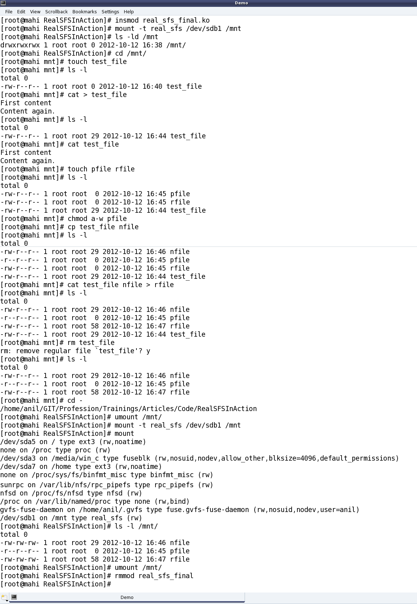

The Semester Project – Part VII: File System in Action
This twenty-fourth article, which is part of the series on Linux device drivers, gets the complete real SIMULA file system module in action, with a real hardware partition on your pen drive.
Real SFS in action
Code available from rsfs_in_action_code.tbz2 gets to the final tested implementation of the final semester project of Pugs & Shweta. This contains the following:
real_sfs.c– contains the code of earlier real_sfs_minimal.c plus the remaining real SIMULA file system functionalities. Note the file system’s name change from sfs to real_sfsreal_sfs_ops.c&real_sfs_ops.h– contains the earlier code plus the additional operations needed for the enhancedreal_sfs.cimplementationsreal_sfs_ds.h(almost same file as in the previous article, plus a spin lock added into the real SFS info structure to be used for preventing race conditions in accessing the used_blocks array in the same structure)format_real_sfs.c(same file as in the previous articles) – the real SFS formatter application- Makefile – contains the rules for building the driver realsfs_final.ko using the `real_sfs.
files, and theformat_real_sfsapplication using theformat_real_sfs.c`
With all these and earlier details, Shweta completed their project documentation. And so finally, Shweta & Pugs were all set for their final semester project demo, presentation and viva.
The highlights of their demo (on root shell) are as follows:
- Loading
real_sfs_finaldriver:insmod real_sfs_final.ko - Using the previously formatted pen drive partition /dev/sdb1 or Re-formatting it using the format_real_sfs application:
./format_real_sfs /dev/sdb1. Caution: Please check out the complete detailed steps on this from the previous article, before you actually format it - Mount the real SFS formatted partition:
mount -t real_sfs /dev/sdb1 /mnt - And … And what? Browse the mounting filesystem. Use your usual shell commands to operate on the file system: ls, cd, touch, vi, rm, chmod, …
Figure 40 shows the real SIMULA file system in action

Realities behind the action
And if you really want to know, what are the additional enhancements Pugs added to the previous article’s code to get to this level, it is basically the following core system calls as part of the remaining 4 out of 5 set of structures of function pointers (in real_sfs.c):
write_inode (under struct super_operations) – sfs_write_inode() basically gets a pointer to an inode in the VFS’ inode cache, and is expected to sync that with the inode in physical hardware space file system. That is achieved by calling the appropriately modified sfs_update() (defined in real_sfs_ops.c) (adapted from the earlier browse_real_sfs application). The key parameter changes being passing the inode number instead of the filename and the actual timestamp instead of the flag for its update status. And accordingly, the call to filename based sfs_lookup() is being replaced by inode number based sfs_get_file_entry() (defined in real_sfs_ops.c), and additionally now the data blocks are also being freed (using sfs_put_data_block() (defined in real_sfs_ops.c)), if the file size has reduced. Note that sfs_put_data_block() (defined in real_sfs_ops.c) is a transformation of the put_data_block() from the browse_real_sfs application. Also, note the interesting mapping to / from the VFS inode number from / to our zero-based file entry indices, using the macros S2V_INODE_NUM() / V2S_INODE_NUM() in real_sfs_ops.h. And finally, underlying write is being achieved using write_to_real_sfs(), a function added in real_sfs_ops.c, very similar to read_from_real_sfs() (already there in real_sfs_ops.c), except the direction reversal of the data transfer and marking the buffer dirty to be synced up with the physical content. Alongwith, in real_sfs_ops.c, two wrapper functions read_entry_from_real_sfs() (using read_from_real_sfs()) and write_entry_to_real_sfs() (using write_to_real_sfs()) have been written and used respectively for the specific requirements of reading and writing the file entries, to increase the code readability. sfs_write_inode() and sfs_update() are shown in the code snippet below. sfs_write_inode() has been written in the file real_sfs.c. For others, check out the file real_sfs_ops.c
#if (LINUX_VERSION_CODE < KERNEL_VERSION(2,6,34)) static int sfs_write_inode(struct inode *inode, int do_sync) #else static int sfs_write_inode(struct inode *inode, struct writeback_control *wbc) #endif { sfs_info_t *info = (sfs_info_t *)(inode->i_sb->s_fs_info); int size, timestamp, perms; printk(KERN_INFO "sfs: sfs_write_inode (i_ino = %ld)\n", inode->i_ino); if (!(S_ISREG(inode->i_mode))) // Real SFS deals only with regular files return 0; size = i_size_read(inode); timestamp = inode->i_mtime.tv_sec > inode->i_ctime.tv_sec ? inode->i_mtime.tv_sec : inode->i_ctime.tv_sec; perms = 0; perms |= (inode->i_mode & (S_IRUSR | S_IRGRP | S_IROTH)) ? 4 : 0; perms |= (inode->i_mode & (S_IWUSR | S_IWGRP | S_IWOTH)) ? 2 : 0; perms |= (inode->i_mode & (S_IXUSR | S_IXGRP | S_IXOTH)) ? 1 : 0; printk(KERN_INFO "sfs: sfs_write_inode with %d bytes @ %d secs w/ %o\n", size, timestamp, perms); return sfs_update(info, inode->i_ino, &size, ×tamp, &perms); } int sfs_update(sfs_info_t *info, int vfs_ino, int *size, int *timestamp, int *perms) { sfs_file_entry_t fe; int i; int retval; if ((retval = sfs_get_file_entry(info, vfs_ino, &fe)) < 0) { return retval; } if (size) fe.size = *size; if (timestamp) fe.timestamp = *timestamp; if (perms && (*perms <= 07)) fe.perms = *perms; for (i = (fe.size + info->sb.block_size - 1) / info->sb.block_size; i < SIMULA_FS_DATA_BLOCK_CNT; i++) { if (fe.blocks[i]) { sfs_put_data_block(info, fe.blocks[i]); fe.blocks[i] = 0; } } return write_entry_to_real_sfs(info, V2S_INODE_NUM(vfs_ino), &fe); }create, unlink, lookup (under struct inode_operations) – All the 3 functions sfs_inode_create(), sfs_inode_unlink(), sfs_inode_lookup() have the 2 common parameters (the parent’s inode pointer and the pointer to the directory entry for the file in consideration), and these respectively create, delete, and lookup an inode corresponding to their directory entry pointed by their parameter, say dentry. sfs_inode_lookup() basically searches for the existence of the filename underneath using the appropriately modified sfs_lookup() (defined in real_sfs_ops.c) (adapted from the earlier browse_real_sfs application – the adoption being replacing the user space lseek()+read() combo by the read_entry_from_real_sfs()). If filename is not found, then it invokes the generic kernel function d_splice_alias() to create a new inode entry in the underlying file system, for the same, and then attaches it to the directory entry pointed by dentry. Otherwise, it just attaches the inode from VFS’ inode cache (using generic kernel function d_add()). This inode, if obtained fresh (I_NEW), needs to be filled in with the real SFS looked up file attributes. In all the above implementations and in those to come, a few basic assumptions have been made, namely:
- Real SFS maintains mode only for user and that is mapped to all 3 of user, group, other of the VFS inode
- Real SFS maintains only one timestamp and that is mapped to all 3 of created, modified, accessed times of the VFS inode. sfs_inode_create() and sfs_inode_unlink() correspondingly invokes the transformed sfs_create() and sfs_remove() (defined in real_sfs_ops.c) (adapted from the earlier browse_real_sfs application), for respectively creating and clearing the inode entries at the underlying hardware space file system, apart from the usual inode cache operations, using new_inode()+insert_inode_locked(), d_instantiate() & inode_dec_link_count(), instead of the earlier learnt iget_locked(), d_add(). Apart from the permissions and file entry parameters, and replacing lseek()+read() combo by read_entry_from_real_sfs(), sfs_create() has an interesting transformation from user space to kernel space: time(NULL) to get_seconds(). And in both of sfs_create() and sfs_remove() the user space lseek()+write() combo has been replaced by the obvious write_entry_to_real_sfs(). Check out all the above mentioned code pieces in the files real_sfs.c and real_sfs_ops.c, as mentioned.
readpage, write_begin, writepage, write_end (under struct address_space_operations) – All these address space operations are basically to read and write blocks on the underlying filesystem, and are achieved using the respective generic kernel functions mpage_readpage(), block_write_begin(), block_write_full_page(), generic_write_end(). First one is prototyped in
and remaining 3 in . Now, though these functions are generic enough, a little thought would show that the first three of these would ultimately have to do a real SFS specific transaction with the underlying block device (the hardware partition), using the corresponding block layer APIs. And that exactly is achieved by the real SFS specific function sfs_get_block(), which is being passed into and used by the first three functions, mentioned above. sfs_get_block() (defined in real_sfs.c) is invoked to read a particular block number (iblock) of a file (denoted by an inode), into a buffer head (bh_result), optionally fetching (allocating) a new block. So for that, the block array of corresponding real SFS inode is looked up into and then the corresponding block of the physical partition is fetched using the kernel API map_bh(). Again note that to fetch a new block, we invoke the sfs_get_data_block() (defined in real_sfs_ops.c), which is again a transformation of the get_data_block() from the browse_real_sfs application. Also, in case of a new block allocation, the real SFS inode is also updated underneath, using sfs_update_file_entry() – a one liner implementation in real_sfs_ops.c. Code snippet below shows the sfs_get_block() implementation. static int sfs_get_block(struct inode *inode, sector_t iblock, struct buffer_head *bh_result, int create) { struct super_block *sb = inode->i_sb; sfs_info_t *info = (sfs_info_t *)(sb->s_fs_info); sfs_file_entry_t fe; sector_t phys; int retval; printk(KERN_INFO "sfs: sfs_get_block called for I: %ld, B: %llu, C: %d\n", inode->i_ino, (unsigned long long)(iblock), create); if (iblock >= SIMULA_FS_DATA_BLOCK_CNT) { return -ENOSPC; } if ((retval = sfs_get_file_entry(info, inode->i_ino, &fe)) < 0) { return retval; } if (!fe.blocks[iblock]) { if (!create) { return -EIO; } else { if ((fe.blocks[iblock] = sfs_get_data_block(info)) == INV_BLOCK) { return -ENOSPC; } if ((retval = sfs_update_file_entry(info, inode->i_ino, &fe)) < 0) { return retval; } } } phys = fe.blocks[iblock]; map_bh(bh_result, sb, phys); return 0; }open, release, read, write, aio_read/read_iter (since kernel v3.16), aio_write/write_iter (since kernel v3.16), fsync (under a regular file’s struct file_operations) – All these operations should basically go through the buffer cache, i.e. should be implemented using the address space operations. And this being a common requirement, the kernel provides a generic set of kernel APIs, namely generic_file_open(), do_sync_read()/new_sync_read() (since kernel v3.16), do_sync_write()/new_sync_write() (since kernel v3.16), generic_file_aio_read()/generic_file_read_iter() (since kernel v3.16), generic_file_aio_write()/generic_file_write_iter() (since kernel v3.16), simple_sync_file()/noop_fsync() (since kernel v2.6.35). Moreover, the address space operations read & write are no longer required to be given since kernel v4.1. Note that there is no API for release, as it is a ‘return 0‘ API. Check out the real_sfs.c file for the exact definition of struct file_operations sfs_fops.
readdir/iterate (since kernel v3.11) (under a directory’s struct file_operations) – sfs_readdir()/sfs_iterate() primarily reads the directory entries of an underlying directory (denoted by file), and fills it up into the VFS directory entry cache (pointed by dirent parameter) using the parameter function filldir, or into the directory context (pointed by ctx parameter) (since kernel v3.11). As real SFS has only one directory, the top one, this function basically fills up the directory entry cache with directory entries for all the files in the underlying file system, using the transformed sfs_list() (defined in real_sfs_ops.c), adapted from the browse_real_sfs application. Check out the real_sfs.c file for the complete sfs_readdir()/sfs_iterate() implementation, which starts with filling directory entries for ‘.‘ (current directory) and ‘..‘ (parent directory) using parameter function filldir(), or generic kernel function dir_emit_dots() (since kernel v3.11), and then for all the files of the real SFS, using sfs_list().
put_super (under struct super_operations) – The previous custom implementation sfs_kill_sb() (pointed by kill_sb) has been enhanced by separating it into the custom part being put into sfs_put_super() (and now pointed by put_super), and the standard kill_block_super() being directly pointed by kill_sb. Check out the file real_sfs.c for all these changes.
With all these in place, one could see the amazing demo by Pugs in action, as shown in Figure 40. And don’t forget watching the live log in /var/log/messages using a ‘tail -f /var/log/messages‘, matching it with every command you issue on the mounted real SFS file system. This would give you the best insight into when does which system call gets called. Or, in other words which application invokes which system call from the file system front. For tracing all the system calls invoked by an application/command, use strace with the command, e.g. type ‘strace ls‘ instead of just ‘ls‘.
Notes
On distros like Ubuntu, you may find the log under /var/log/syslog instead of /var/log/messages